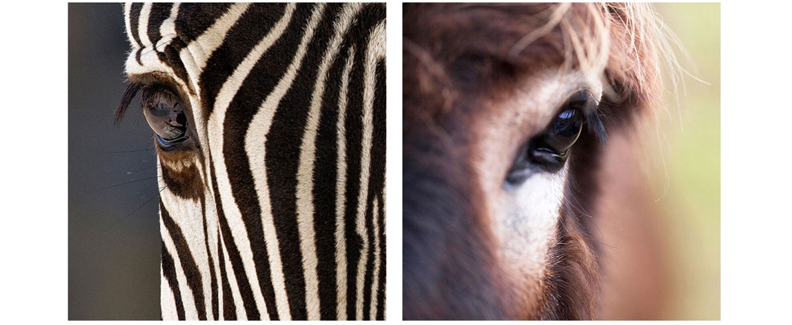

2021-04-30: Incorporation of equine HBV - a newly discovered hepadnavirus
Recent work has identified a novel hepadnavirus that occurs globally in donkeys and zebras. Equine hepatatis B virus (EqHBV) causes a hepatotropic disease comparable to that caused by hepatitis B virus (HBV) in humans.

The identification of EqHBV in zebras and donkeys offers unique opportunities for comparative studies of hepadnaviruses.
To incorporate EqHBV into Hepadnaviridae-GLUE, we first needed to virtually rotate' the circular genome so that it uses the same start position as the other HBV reference sequences in our project.
For historical reasons, most hepadnavirus sequences are published with a genome start position established in the early days of HBV sequencing. However, this start is located internally within the coding genome, rather than at the transcriptional 'start'. In Hepadnaviridae-GLUE, reference sequences start immediately upstream of the Core gene.
Some of the pubished hepadnavirus genomes in GenBank already use the equivalent start position (e.g. ground squirrel hepatitis virus), but for those that don't we have used GLUE to apply the appropriate rotation. The process is implemented by the GLUE commands in this script.
Note: GLUE's scripting layer is based on JavaScript.
2021-03-15: Hepadnavirus-GLUE project published
Hepadnavirus-GLUE is the second broadly-scoped GLUE project to be published by the Gifford lab as part of the DIGS-for-EVEs initiative.